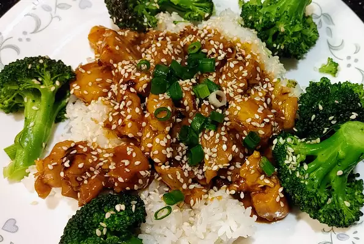

Instant Pot Honey Garlic Chicken

Ingredients
- 1/3 cup Honey
- 1/3 cup Soy Saunce
- 3 cloves Garlic, minced
- 3 tablespoons ketchup
- 2 tablespoons sriracha sauce
- 2 pounds chicken breast, cut into 1-inch cubes
- 1/4 cup cornstarch
- 2 tabesppons vegetable oil
- 1/4 cup chicken broth
- 2 green onions, chopped
- 1 teaspoon sesame seeds, or as desired
Directions
-
combine honey,soy sauce, garlic ,ketchup, and sriracha sauce in a bowl; mix well and set aside
-
Turn on a multi-functional pressure cooker (such as Instant Pot®) and select the Saute function. Add oil until hot. Add 1/2 the chicken and cook for 3 minutes. Flip and cook 2 more minutes. Transfer chicken to a plate and repeat with remaining chicken. Pour chicken broth into the empty Instant Pot® and cook for 2 minutes, scraping up the brown bits with a wooden spoon to deglaze the pot. Turn Instant Pot® off. Return chicken to the pot and pour honey mixture on top. Stir to coat with sauce.
-
Close and lock the lid. Select high pressure according to manufacturer's instructions; set timer for 2 minutes. Allow 10 minutes for pressure to build.
-
Release pressure carefully using the quick-release method according to manufacturer's instructions, about 5 minutes. Unlock and remove the lid. Serve chicken sprinkled with green onions and sesame seeds.